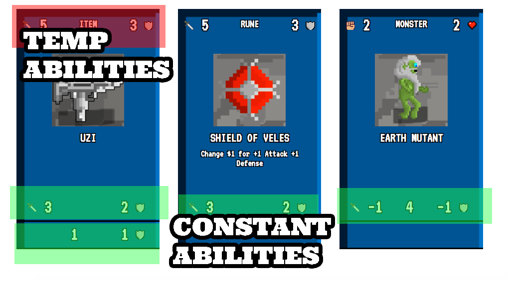
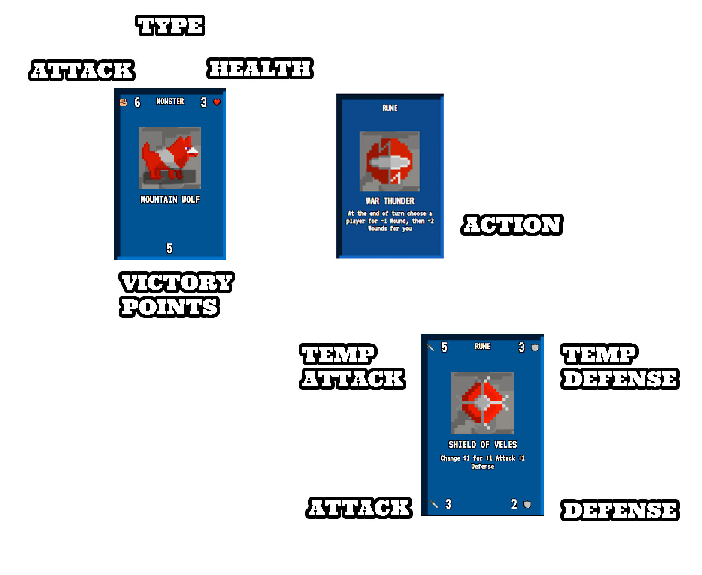

In Slavocalypse you are creating one (and only one) mighty item to surive in post apocalyptic East Europe. You'll create it from the items (ITEM cards) and magic Slavic runes (RUNE cards) you'll find during your journeys outside the camp. Whenever you'll find new item or rune, you stack it on the top your previously owned items and runes, in a way that only bottom part of all previous cards will be visible. Abilities visible in this part will remain active. Abilities on the top of the card are only active till the next card is stacked on top.
During your trip you'll meet dangerous monsters and Actient Deities. You can fight them if you have enough Attack points, and they'll hurt you in case your Defense is lower then their Attack.
At the beginning of each turn you can go for a journey outside the camp. There are 6 cards visible on the Journey Deck, and to get to the selected one you need to pay for each card you'll pass (so the first card is free, the second one costs $1, third $2, etc.). For the Item/Rune card, you take them and stack on your deck. For monsters and deities, you can stack them after you defeat them. When the card is taken down from the Journey deck, another card is drawed from the remaining cards, and put the the end of the deck.
At the beginning of each turn you can choose to stay in the camp instead fo going to the journey. There is several different camps in the game, and each of them can give you different different useful actions and abilities.
When all the cards are gone, the player with most Victory Points win. You can gain them from cards, and each Item + Rune card pair gives you one more VP. Each Wound left at the game the end of costs you -1 VP.